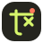
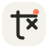
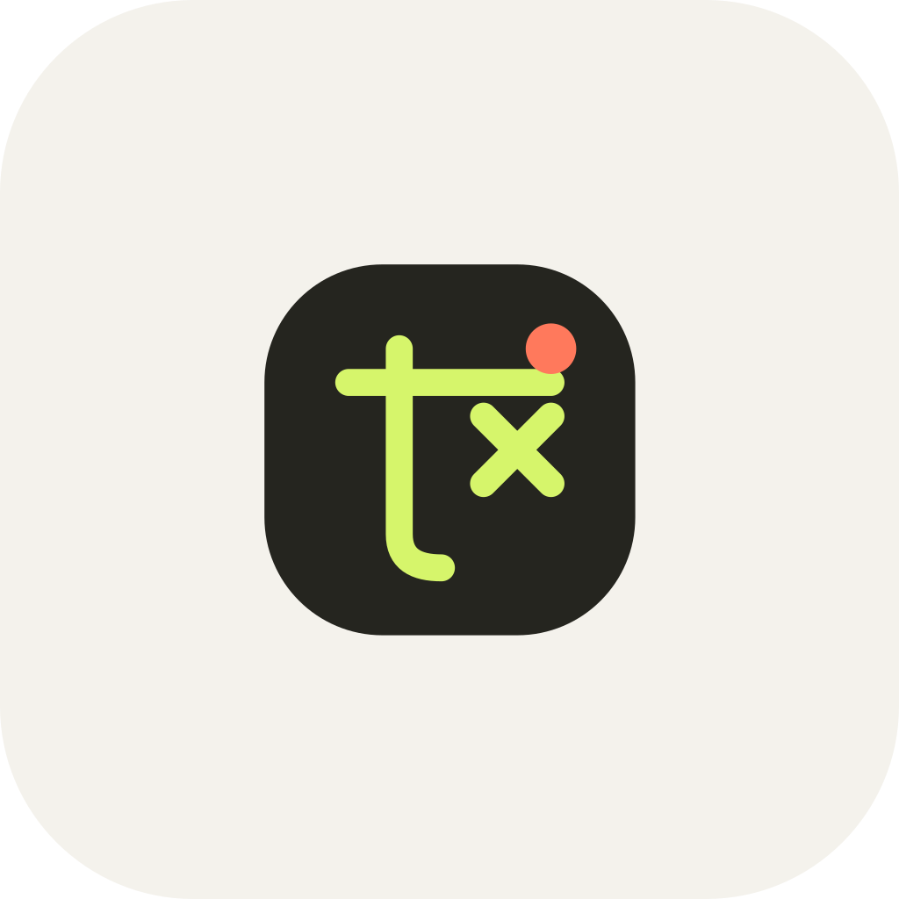

Do
Keep the rounded tile, the lime stroke, and the coral dot. Set the name in lowercase Space Grotesk, with a coral period.
01 — Mark
How the lime stroke, coral dot, and paper field sit together. A practice document for the page in library/websites/tweenlab/.
Lockups

tweenlab.
tweenlab.Clearspace
Keep one mark-height of paper empty on every side. Minimum symbol size is 16px. The word does not go under 96px wide. The coral dot stays at the top right of the tile, and the period stays coral.
02 — Colour
Paper #F4F2EC
Ink #25251F
Lime #D6F56B
Coral #FF795C
Lilac #C5B6F3
| Pair | Ratio |
|---|
03 — Type
04 — Notes
05 — Icon

06 — Use
Do
Keep the rounded tile, the lime stroke, and the coral dot. Set the name in lowercase Space Grotesk, with a coral period.
Don't
Do not drop the dot, outline the tile, or set the name in a script face. Tweenlab